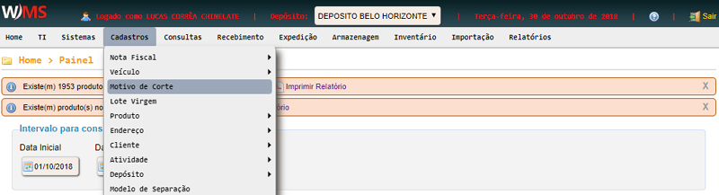
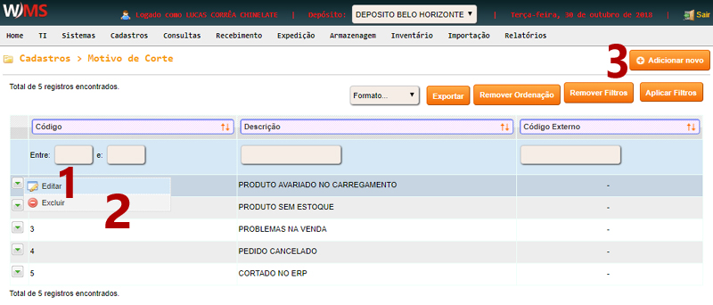
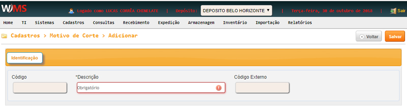

Cadastros -> Motivo de Corte
O cadastro de MOTIVO DE CORTE é usado em CANCELAMENTO DE PEDIDOS.
Clique no menu CADASTROS, em seguida clique em MOTIVO DE CORTE.

Para editar um motivo de corte, basta posicionar o mouse no desenho da seta no início da linha e
clicar em EDITAR (ver item 1 da figura abaixo).
Para excluir um motivo de corte, basta posicionar o mouse no desenho da seta no início da linha e
clicar em EXCLUIR (ver item 2 da figura abaixo).
Para adicionar um novo motivo de corte, clique em ADICIONAR NOVO (ver item 3 da
figura abaixo).

Na tela de CADASTRO, preencha todos os campos e clique em SALVAR.
